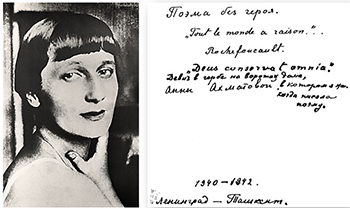

5 января – героиня «Поэмы без героя» увидела в зеркале свое прошлое и будущее
Анна Ахматова «Поэма без героя» Поэма была начата в 1940 году: В основном поэма была завершена в 1943 г. в Ташкенте, где Ахматова находилась в эвакуации. В дальнейшем Ахматова ещё несколько раз возвращалась к поэме и перерабатывала её (вплоть до 1965 г.), причём в ходе этих переработок объём поэмы увеличился почти вдвое. В «Поэме без героя» Ахматова описывает давно прошедшую эпоху — предреволюционные годы, время своей молодости и литературного дебюта. Это описание делается из исторического отдаления, когда уже известны и страшные судьбы большинства тогдашних друзей и знакомых, и страшная метаморфоза России в целом. Это набрасывает на героев поэмы особенный почти мистический флёр: ведь все они — уже тени, как ни трудно пишущей поэму Ахматовой с этим смириться: Как же это могло случиться, Что одна я из них жива?
В русской традиции, гадая в канун Крещения, девушка видела в зеркале жениха. В традиции литературной, например у Жуковского, этот жених — мертвый. В ахматовской поэме отражение маскарада тринадцатого года — это лагеря тридцать седьмого.
«Словно в зеркале страшной ночи
И беснуется и не хочет
Узнавать себя человек,
А по набережной легендарной
Приближался не календарный —
Настоящий Двадцатый Век»